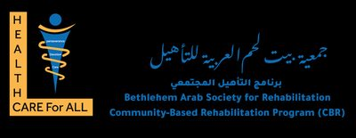
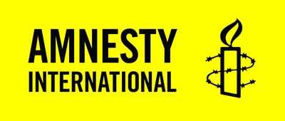

We help organisations turn evidence into achievable results through independent evaluations, adaptive MEAL systems, strategic planning, capacity building, and organisational development, built for complex environments across Palestine and the MENA region.
Track Record
50+
Projects delivered across MENA
34 client organisations served
500+ professionals trained
8 thematic sectors covered
OECD-DAC · UNEG · IASC standards
0
Projects Delivered
0
Client Organisations
0
Thematic Sectors
0
Professionals Trained
Trusted by leading organisations across the MENA region
Who We Are
Local Expertise. International Standards.
Deep Insights for Monitoring & Evaluation Ltd. was founded on a simple belief: organisations working across the MENA region deserve rigorous, evidence-based work, paired with M&E systems that genuinely support learning and accountability.
Our team has operated in war zones, protracted displacement settings, and politically complex environments where access, trust, and cultural competence are what separate credible work from work that misses the point.
Field TestedOperating across conflict zones and complex environments where most firms won't go
Evidence FirstFull-cycle work: baselines, evaluations, MEAL systems, strategy, and capacity building
MENA RootedLocal access and trust, benchmarked to international methodological standards
50+ Projects
34 Client Organisations
6+ Countries
Thematic Expertise
Sector Specialisations
Our work is strengthened by real sector knowledge across the areas our clients work in, held by our core team and specialist Advisory Network.
MHPSS
Gender & GBV
Child Protection
Health & SRHR
Education & ECD
Food Security
Climate
Disability Inclusion
What Sets Us Apart
Why Partner With Us
01
Research Excellence
Hover to learn more
Research Excellence
We apply OECD-DAC criteria, UNEG norms, and IASC guidelines as standard practice. Mixed-methods designs combining quantitative analysis with qualitative depth: Outcome Harvesting, Contribution Analysis, ATLAS.ti coding.
02
Deep Local Knowledge
Hover to learn more
Deep Local Knowledge
Our field workers are on the ground every day, not as outsiders, but as community members and subject-matter experts embedded in the contexts they serve. This direct presence is how we access the relationships, trust, and lived knowledge that no visiting team can replicate.
03
Sector Specialisation
Hover to learn more
Sector Specialisation
We are not generalists. Our core team and international Advisory Network bring specialist knowledge in MHPSS, GBV, child protection, health systems, food security, education, and climate, grounded in sector-specific standards and backed by international experts with global field experience.
04
Digital MEAL Systems
Hover to learn more
Digital MEAL Systems
Experienced ActivityInfo implementers, Power BI developers, and MIS architects. We are also official CommCare service providers. We build systems connecting multiple country offices with automated reporting that genuinely changes how organisations manage information.
05
Findings That Get Used
Hover to learn more
Findings That Get Used
Data is only valuable when it drives decisions. Every engagement is built around end users: what do they need to decide, and how do we present findings clearly enough for them to act? Validation workshops ensure teams own the results.
06
Ethical Practice
Hover to learn more
Ethical Practice
Strict ethical standards are non-negotiable: informed consent, confidentiality, do-no-harm. Especially important in trauma-sensitive work with GBV survivors, children, and crisis-affected populations. Data protection comes standard.
Advisory Services
What We Do
We cover the full evidence-to-action cycle. Rigorous evaluations, adaptive digital systems, strategic planning that holds up under pressure, built over years of real work across the MENA region.
01
Evaluations & Research
Independent OECD-DAC evaluations, impact assessments, and mixed-methods research across humanitarian and development contexts. Baseline through final evaluation.
OECD-DACUNEGIASC
02
MEAL Systems & Digital
Adaptive monitoring systems built on leading digital platforms. MEL framework design, ActivityInfo implementation, Power BI dashboards, and custom MIS architecture. Official CommCare service providers.
ActivityInfoPower BICommCare
M&E Dashboard — Q1 2025Live
0
Beneficiaries Reached
↑ +12% vs target
0
Indicator Coverage %
↑ On track
0
Data Quality Score
/ 40 max
Monthly Reach by District
Jan
Feb
Mar
Apr
May
Jun
Sector Split
MHPSS (42%)
Protection (35%)
Livelihoods (23%)
03
Strategy & Risk Management
Evidence-based strategic planning, Theory of Change development, contingency frameworks, and risk analysis for complex MENA operating environments.
Theory of ChangeRisk Frameworks
04
Organisational Development
Governance, finance, HR, SOPs development, and safeguarding frameworks aligned with UNICEF, EU, and USAID requirements. OCA, HACT support, and compliance strengthening.
GovernanceHACTCompliance
05
Capacity Building & Training
Customised training in MEL, GBV, protection, and safeguarding — combining structured learning, hands-on application, and on-the-job mentoring.
MEL TrainingGBVProtection
06
Resource Mobilisation
Competitive proposal development, donor landscape analysis, and fundraising strategy. Results frameworks that resonate with major institutional funders.
Donor StrategyProposals
Selected Work
Selected Projects
Real work, across Palestine and the region — evaluation, strategy, and systems that held up under pressure.
Whether you need an evaluation, a MEAL system, or strategic advisory support — we'd welcome a conversation about your work.
Advisory Services
What We Do
Evaluations & Research
Independent evaluation grounded in international standards, tailored to your context
We design and lead evaluations that meet the highest methodological standards while remaining responsive to the realities of programming in complex environments. Our evaluation practice is grounded in OECD-DAC criteria, UNEG norms, and EU evaluation guidelines, adapted to access constraints, stakeholder dynamics, and ethical considerations specific to each context.
Our team has conducted evaluations for UN agencies, international NGOs, bilateral donors, and government institutions across MHPSS, GBV, sexual and reproductive health, child protection, food security, education, and livelihoods, at baseline, mid-term, and final stages.
We design mixed-methods evaluations combining quantitative analysis with qualitative depth. Specialist techniques such as Outcome Harvesting, Most Significant Change, and Contribution Analysis help us assess change in complex, non-linear programme contexts.
Project Example
Explore what's included
Service Offer
What we deliver
Final, mid-term, and baseline evaluations
Theory of Change validation and logframe review
Outcome Harvesting and impact assessment
Thematic evaluations: MHPSS, GBV, protection, SRH
Rapid needs assessments
Real-time and learning reviews
Evidence synthesis and literature review
Post-crisis and resilience-focused evaluation
Methods & Standards
How we work
OECD-DAC six evaluation criteria
UNEG Norms and Standards
IASC MHPSS Guidelines
Mixed-methods design
ATLAS.ti qualitative coding
KoboToolbox / ODK data collection
SPSS / Stata statistical analysis
MEAL Systems & Digital
Adaptive monitoring systems that organisations actually use, built for decision-making, not compliance
We build MEAL systems that work in the field, not just on paper. Our approach combines technical expertise in digital platforms with hard-won understanding of how monitoring systems function in complex operating environments, where connectivity is intermittent, staff capacity varies, and donor reporting requirements are demanding.
We are experienced ActivityInfo implementers, skilled Power BI dashboard developers, CommCare service providers, and MIS architects. We have built systems connecting multiple country offices, designed mobile data collection workflows, and created automated reporting solutions that eliminate hours of manual work each reporting cycle.
Project Example
M&E Dashboard — Q1 2025Live
0
Beneficiaries Reached
↑ +12% vs target
0
Indicator Coverage %
↑ On track
0
Data Quality Score
/ 40 max
Monthly Reach by District
Jan
Feb
Mar
Apr
May
Jun
Sector Split
MHPSS (42%)
Protection (35%)
Livelihoods (23%)
Illustrative dashboard built with ActivityInfo + Power BI
Explore what's included
Service Offer
What we deliver
MEAL system design and framework development
ActivityInfo database configuration and management
CommCare application design and deployment
Mobile data collection: KoboToolbox, ODK, CommCare
Indicator tracking and performance monitoring systems
Data quality audits and validation frameworks
Automated donor reporting templates
Staff training and system handover
Methods & Tools
How we work
ActivityInfo
Power BI / Excel Power Query
KoboToolbox / ODK
SPSS / Stata
ATLAS.ti qualitative coding
CommCare / ONA
Strategy & Risk Management
Evidence-informed strategic planning for organisations navigating uncertain and complex environments
Strategic planning in the MENA region requires approaches that account for volatility, political complexity, and rapidly shifting funding landscapes. We combine thorough situational analysis with participatory facilitation that builds ownership and organisational alignment, while keeping plans adaptable enough for course-correction.
We have facilitated strategic planning for local NGOs, international organisations, and government ministries across a range of contexts, from multi-year institutional strategies to emergency-response contingency frameworks.
Project Example
Explore what's included
Service Offer
What we deliver
Organisational strategic planning
National and sector strategy development
Theory of Change development and validation
Risk analysis and risk register development
Contingency and emergency preparedness planning
Stakeholder engagement and facilitation
Strategic review and mid-course correction
Organisational Development
Governance, compliance, and institutional frameworks that prepare organisations for expanded partnerships
We strengthen organisations from the inside, developing governance structures, policy frameworks, SOPs, and compliance systems that meet major donor requirements and build the institutional credibility needed to access new funding. Our work aligns with UNICEF, EU, and USAID institutional standards.
Our organisational development work is grounded in realistic assessments of existing capacity. We identify genuine gaps and work with organisations to build systems that function sustainably in their specific context.
Project Example
Explore what's included
Service Offer
What we deliver
Governance and board policy development
Finance and procurement manual development
HR policy frameworks and SOPs development
Safeguarding policies: PSEA, child protection
Organisational Capacity Assessments (OCA)
HACT framework implementation
Compliance gap analysis and remediation plans
Capacity Building & Training
Structured learning that builds genuine, lasting capability
Our capacity building approach goes beyond knowledge transfer. We combine structured training with practical application, on-the-job coaching, and mentoring, ensuring that learning translates into changed practice. Training of Trainers programmes build sustainable internal capacity.
We have trained government staff, NGO programme teams, field officers, and senior management across the region, in groups ranging from small specialist workshops to large-scale multi-organisation programmes. We also deliver dedicated handover training when we build MEAL systems or organisational frameworks, ensuring staff can independently operate and maintain what we create.
Project Example
Explore what's included
Training Areas
What we cover
MEL systems and data management
GBV prevention and response
Child protection and safeguarding
Proposal writing and results frameworks
MEAL system handover and user training
Organisational policy and SOP induction training
Training of Trainers (ToT) facilitation
Resource Mobilisation
Evidence-based proposals and fundraising strategy that win institutional funding
We help organisations translate their evidence and expertise into competitive funding proposals. Our proposal development combines technical quality — well-structured results frameworks, clear theories of change, coherent budgets — with compelling narrative that communicates an organisation's value proposition to institutional donors.
Project Example
Explore what's included
Service Offer
What we deliver
Proposal writing and technical development
Donor landscape analysis and mapping
Fundraising strategy development
Results framework and logframe development
Concept note development
Grant management advisory support
Private Sector Analytics & BI
Development-sector analytical depth applied to private sector intelligence needs
We apply the same rigorous, structured approach we bring to development evaluation work to help private sector organisations make better use of their data. Many businesses collect large volumes of operational, customer, and financial data but lack the analytical infrastructure to turn it into clear decisions.
We design and build business intelligence solutions, including interactive dashboards, KPI tracking systems, and automated reporting pipelines, that surface the right information for the right people at the right time. Whether you need to understand sales performance, monitor operational efficiency, or analyse market trends, we structure your data into tools your team will actually use.
Explore what's included
Service Offer
What we deliver
BI dashboard design and development
KPI framework and performance tracking
Predictive analytics and modelling
Market research and competitive analysis
Customer and operational data analysis
Data pipeline and automation development
Tell Us About Your Project
Every project starts with a conversation. Share your brief and we'll outline the right approach for your context and objectives.
Thematic Expertise
Sector Specialisations
Methodological expertise without thematic knowledge produces technically sound but contextually weak evidence. Our team and specialist Advisory Network bring sector-specific depth across eight critical areas.
MHPSS
Mental health and psychosocial support evaluation. IASC guidelines, clinical quality assessment, staff wellbeing indicators, and culturally-appropriate approaches in protracted crisis settings.
IASCClinical QualityCrisis Settings
Gender & GBV
Gender analysis, GBV prevention and response, feminist evaluation approaches, survivor-centred data collection protocols, and safe referral pathway assessment.
Feminist EvalGBV StandardsSGBV Data
Child Protection
Child protection evaluation, safeguarding framework development, PSEA compliance, case management quality assessment, and protection mainstreaming.
PSEACase ManagementSafeguarding
Health & SRHR
Health systems strengthening, sexual and reproductive health rights programming, health-MHPSS integration, and primary healthcare assessment in conflict settings.
SRHRPHCHealth Integration
Education & ECD
Education sector evaluation, early childhood development strategy, youth programming assessment, learning outcomes measurement, and education in emergencies frameworks.
ECD StrategyEiEYouth
Food Security
Food security and livelihoods assessments, agricultural programme evaluation, food systems analysis, and resilience measurement in protracted crisis and displacement contexts.
FIESAgricultureLivelihoods
Climate & Green Economy
Climate adaptation programme evaluation, circular economy assessment, sustainable agriculture, and environmental resilience programming in MENA-specific climate vulnerability contexts.
Climate Adapt.Circular EconomyResilience
Disability Inclusion
CRPD-aligned evaluation approaches, disability data disaggregation, accessibility assessment, and inclusive programme design — ensuring persons with disabilities are participants, not afterthoughts.
CRPDInclusive M&EAccessibility
Work With Our Team
Our specialists bring methodological rigour and deep sector knowledge to every project, from scoping to final report.
Our Work
Selected Projects
A cross-section of recent advisory, evaluation, and systems work across Palestine and the MENA region — representing the breadth of our thematic and methodological scope.
0
Projects Delivered
0
Client Organisations
0
Thematic Sectors
0
Professionals Trained
0
Countries
MHPSS Evaluation
Gaza · East Jerusalem · West Bank
EVALUATION · MHPSS · OECD-DAC
Integrated MHPSS Programme Evaluation
Médecins du Monde | BMZ Funding
Multi-site evaluation of integrated mental health and psychosocial support services across three sites in Palestine. Applying OECD-DAC criteria with a rights-based methodology, we assessed service quality, referral pathways, staff wellbeing, and programmatic adaptations following the October 2023 escalation.
3Sites Evaluated
OECD-DACStandard Applied
BMZFunded Programme
Related Reading
Food Security Evaluation
Beit Jala, Area C · West Bank
EVALUATION · FOOD SECURITY · PARTICIPATORY
Agro-Ecology & Food Security Final Evaluation
Caritas Jerusalem | Generalitat Valenciana
Final evaluation of a community food sovereignty programme in Beit Jala (Area C) engaging 1,495 beneficiaries. Mixed-methods design combined KIIs, FGDs, field observations, and document review — with systematic qualitative analysis in ATLAS.ti.
1,495Beneficiaries
ATLAS.tiQualitative Analysis
Area CComplex Context
Related Reading
National ECD Strategy
6 Government Ministries
STRATEGY · ECD · GOVERNMENT
National ECD Strategy 2025–2030
Humanity & Inclusion | Government of Palestine
Led the national review and redesign of Palestine's Early Childhood Development Strategy, engaging six government ministries in a comprehensive participatory process. The five-year framework integrates health, education, and protection with disability inclusion, MHPSS, and emergency preparedness — plus a costed action plan.
6Ministries Engaged
2025–2030Strategy Period
NationalPolicy Level
Related Reading
Regional Cloud MIS
Palestine · Jordan · Lebanon
MEAL SYSTEMS · MIS · REGIONAL
Regional Cloud-Based Management Information System
United Palestinian Appeal
Designed and implemented a regional MIS connecting UPA's operations across Palestine, Jordan, and Lebanon through a nine-phase development process. Unified data architecture with ActivityInfo integration, custom Power BI dashboards, GDPR-compliant data management, and automated reporting workflows.
Endline evaluation of a three-year child protection and MHPSS emergency response reaching 4,200 crisis-affected beneficiaries. The evaluation validated the effectiveness of a 12-session resilience model and assessed case management quality and referral pathway functionality.
4,200Beneficiaries
12-SessionModel Validated
EndlineEvaluation
Related Reading
Start a Project With Us
Tell us about your programme, your objectives, and your timeline. We'll scope a rigorous, context-appropriate approach.
Who We Are
About Us
Our Firm
Who We Are
Deep Insights for Monitoring & Evaluation Ltd. is a specialist advisory firm built around an uncompromising commitment to quality. Every engagement, regardless of scale or sector, is held to the same international standards: OECD-DAC evaluation criteria, UNEG norms, IASC guidelines, and EU evaluation frameworks, applied rigorously and without exception.
Our team brings together evaluation methodologists, digital systems specialists, thematic sector experts, and strategic advisors with track records across UN agencies, bilateral programmes, and government reform processes throughout the MENA region and beyond. We serve UN agencies, international NGOs, bilateral donors, government institutions, and private enterprises, with a consistent focus on producing evidence and advisory that is credible, contextually grounded, and genuinely useful.
Our Values
What We Stand For
Research Excellence
We apply international methodological standards including OECD-DAC, UNEG, and IASC as standard practice, not aspirational benchmarks.
Utility
Evidence only has value when it changes decisions. Every engagement is designed with end users in mind — findings they can own and act upon.
Integrity
We tell clients what the evidence shows, not what they want to hear. Independent, honest, and ethically grounded practice is non-negotiable.
Partnership
We invest in genuine, long-term relationships — not transactional engagements. The depth of partnership shapes the quality of evidence.
How We Work
Our Approach
01
Contextualise
Deep situational analysis, stakeholder mapping, document review, and scoping to define the right evaluation or advisory questions before designing methodology.
02
Design
Methodological design tailored to context, objectives, and available resources, balancing depth with feasibility and integrating ethical safeguards.
03
Deliver
Careful data collection, systematic analysis, and synthesis — with quality assurance at every stage and transparent communication with clients throughout.
04
Communicate
Findings communicated to generate genuine learning through validation workshops, accessible reports, dashboards, and facilitated sessions that build stakeholder ownership.
The Team
Leadership
A multidisciplinary team of evaluation specialists, systems experts, and strategic advisors — united by a shared commitment to rigour and impact.
Ghazi Kamal
COO & Co-Founder
Amal Tarazi
CEO & Co-Founder
Loor Masri
Communications & Research Specialist
Ramzy Ibsais
Organisation Development Specialist
Alejandro Rizzo
MEL Systems Specialist
Basma Zaqout
MEAL & MIS Specialist
Advisory Network
Specialist Advisors
Dr. John Ashley
Agriculture & Green Economy Specialist
Elina Qlaibo
Humanitarian & Gender Specialist
Luay Fawadleh
MHPSS Specialist
Miltiadi Habash
Finance & Compliance Specialist
Mohammad Bakri
Agricultural Specialist
Suad Abu Daya
Gender & Protection Specialist
Valentina Rangel Parra
Resource Mobilization Specialist
Victoria San Juan
Quantitative Research & Evaluation Specialist
Our Network
Partners & Clients
Organisations that have entrusted Deep Insights for Monitoring & Evaluation Ltd. with their evidence and advisory needs.
UNFPA
UNICEF
UN Women
European Union
Save the Children
Humanity & Inclusion
Médecins du Monde
Medical Aid for Palestinians
SOS Children's Villages
Caritas Jerusalem
Caritas Española
We Effect
Enabel
Norwegian People's Aid
Alianza / ActionAid
AECID
Sida
BMZ
British Council
PARC
United Palestinian Appeal
PFPPA
Minist. Social Development
PCBS
TCC
TDH / Terre des Hommes
FEMPAWER
GTC
PWWSD
ANERA
ANAR
APEFE

BASR
World Vision
Oxfam
Belgian Dev. Cooperation
PCC
PFAIU
Tadweer
VIS
Italian Affairs
Italian Agency
Maan
AFD France

Amnesty International
Awda
BFTW
CFTA
MOE
MOH
PFU
SIF
Luxembourg
ActionAid
Media
In the Field
A glimpse into how we work — across communities, boardrooms, and field sites throughout the region.
Knowledge & Learning
Insights
Methodology notes and publications drawn directly from our advisory and evaluation work across Palestine and the MENA region.
Knowledge & Learning
Publications
Publication
MHPSS Evaluation in Protracted Crisis: Field Notes from Palestine
March 2025 · 14 min read
Applying OECD-DAC criteria in active conflict demands more than methodological rigour — it requires ethical adaptation, clinical team composition, and a willingness to let programme context reshape evaluation design.
Related ProjectsMHPSS EvaluationChild Protection Evaluation
Evaluating MHPSS programmes in active conflict is methodologically demanding in ways that standard OECD-DAC guidance does not fully anticipate. This note draws on two programme evaluations conducted across Gaza, East Jerusalem, and the West Bank to offer practical field notes for evaluation practitioners working in similar contexts.
The OECD-DAC criteria don't break — but they need adaptation
Relevance, effectiveness, efficiency, impact, and sustainability remain the right framework. What changes in a protracted crisis is how each criterion is operationalised. Relevance requires asking whether the programme is responding to the right presenting needs at this moment — which shifts rapidly in active conflict. A programme designed for chronic complex trauma looks very different from one responding to mass casualty events. We found it useful to build explicit sensitivity to programme adaptation into our evaluation questions: not just did it work, but how did the programme change in response to the crisis, and were those changes appropriate? Sustainability, similarly, asks different questions when institutional continuity is genuinely uncertain. We found it more useful to evaluate sustainability at the level of trained workforce and community-embedded approaches than at the level of organisational infrastructure.
Staff wellbeing as a substantive evaluative indicator
In both evaluations we treated staff wellbeing as a substantive indicator — not an afterthought. Practitioners delivering MHPSS services in Gaza post-October 2023 were simultaneously affected community members. Their capacity to deliver quality services, maintain professional boundaries, and manage caseloads was directly affected by their own exposure to trauma. Staff interviews were conducted by team members with clinical MHPSS backgrounds, in private, with clear separation from any performance review process. The findings — on supervision adequacy, peer support structures, and caseload manageability — became some of the evaluation's most actionable outputs, with concrete recommendations for management that programme teams could act on immediately.
Ethical data collection with conflict-affected populations
Standard informed consent procedures require adjustment when respondents may associate formal paperwork with risk. We simplified consent forms and used verbal consent in all FGD settings, building in additional rapport time before structured data collection began. Beneficiary interviews were conducted in trusted community settings rather than programme facilities wherever possible. All data on sensitive indicators — trauma symptoms, GBV disclosure history, suicidal ideation in adolescent programming — was collected exclusively by trained clinical staff, never by data enumerators, and transmitted under strict data protection protocols.
Referral pathway assessment as a core effectiveness question
Referral pathway functionality emerged as a central effectiveness question in both evaluations. The most technically sound MHPSS programme fails beneficiaries if the systems around it cannot provide the specialised care that case management identifies. We assessed pathways through case file review, KIIs with receiving facilities, and — where accessible — traced case interviews. A consistent finding: referral documentation was stronger than referral outcomes. Recording a referral and confirming a beneficiary received the referred service are not the same thing, and MEAL systems rarely track the latter. This gap represents one of the most significant quality risks in MHPSS case management, and one of the most addressable.
On team composition
MHPSS evaluations are strengthened by genuine multidisciplinarity. Our teams combined evaluation methodology expertise with clinical MHPSS knowledge and deep contextual familiarity with Palestine. That combination shaped not just the quality of data collection but the interpretation of findings — and ultimately the utility of recommendations for programme teams navigating genuinely difficult operating environments.
Methodology Note
Building MEAL Systems That Work in the Field
February 2025 · 12 min read
The gap between a well-designed MEAL system and one field teams actually use is one of the most persistent failures in development programme management. This note draws on a regional MIS implementation connecting operations across three countries.
Related ProjectsRegional Cloud MIS
MEAL systems most often fail not because of technical inadequacy but because they were designed around donor reporting requirements rather than programme team decision-making needs. This note documents lessons from a nine-phase regional MIS implementation connecting UPA's operations across Palestine, Jordan, and Lebanon — and from the patterns we encounter when inheriting systems built without that distinction in mind.
The most common failure mode
When the primary output of a MEAL system is a quarterly donor report, field teams quickly learn the system exists for compliance — not for them. Data quality declines, workarounds proliferate, and the system gradually becomes a parallel administrative burden rather than a management tool. The fix is to design data flows around the questions programme managers actually want answered, and treat donor reporting as a downstream output of that — not the primary driver. In practice, this means sitting with programme teams before system design begins and asking: what do you genuinely need to know each week to manage this programme well? Those answers drive the system architecture.
ActivityInfo as a field data backbone
For organisations operating across MENA, ActivityInfo has become our preferred platform for field-level data collection and indicator tracking. Its offline functionality handles the connectivity constraints common in field settings; its form builder is accessible to non-technical staff; and its outputs feed directly into Power BI for dashboard visualisation. In the UPA implementation, we connected data from three country offices — each with different programme structures and indicator frameworks — into a unified data architecture. The upfront investment in indicator harmonisation and data governance protocols paid off in cross-country real-time programme data, replacing a quarterly Excel reconciliation process that was absorbing significant M&E officer time.
Power BI dashboards — the choices that matter
A Power BI dashboard is only useful if programme teams actually open it. That sounds obvious, but a significant proportion of dashboards we inherit have not been accessed by anyone other than the M&E officer in months. Useful dashboards are designed around three or four genuinely important management questions. They are not comprehensive, do not attempt to visualise every logframe indicator, and are structured around how programme teams think about their work — not how a results framework is sequenced. Load time, screen size, and language all matter more than visual sophistication. We also invest heavily in the handover process: a dashboard a team understands and trusts is far more valuable than a technically sophisticated one that functions as a black box.
The governance question nobody asks early enough
In multi-country or multi-partner implementations, data governance is the issue that causes the most downstream problems when not addressed at the design stage. Who has permission to enter and edit records? Who can view aggregated cross-site data, and who sees only their own? What happens to data access when a staff member leaves? What is the protocol when submitted data is contested? We document data governance in a formal protocol and build permission structures into the system architecture from the start — not as an afterthought when a data breach or a disputed entry first surfaces.
Methodology Note
Evaluation Under Constraint: Participatory Methods in Restricted Contexts
January 2025 · 11 min read
Two engagements — a food security evaluation in Area C and a six-ministry ECD strategy process — present different methodological challenges with a common thread: useful evaluation evidence requires adapting methods to context, not forcing context to fit methods.
Related ProjectsFood Security EvaluationNational ECD Strategy
Two of our recent engagements — a final evaluation of a food sovereignty programme in Beit Jala (Area C, West Bank) and the development of Palestine's National ECD Strategy spanning six government ministries — presented very different methodological challenges. What connects them is a principle that holds across both: useful evaluation evidence requires adapting methods to context, not forcing context to fit a preferred method.
Area C: treating access as a live methodological variable
Evaluation in Area C of the West Bank requires treating access as a live methodological variable rather than a fixed condition. Entry restrictions, unpredictable road closures, and community sensitivity to external presence all affect what data can be collected, from whom, and when. For the Beit Jala evaluation, field observations were conducted in pairs with community guides rather than by external evaluators alone. FGD timing and locations were determined by community leaders, not by our data collection schedule. The evaluation team included local researchers with existing community relationships — not as a courtesy, but as a methodological necessity. These adaptations produced richer data than a more externally controlled process would have. Community members spoke more openly in settings they controlled, about a programme they had participated in designing.
ATLAS.ti for rigorous qualitative analysis
With 1,495 beneficiaries and a programme embedded in a specific community context, the qualitative dimension of the evaluation required systematic analysis across a substantial volume of transcript data. We coded all FGD and KII transcripts in ATLAS.ti using a coding framework developed iteratively from both the evaluation questions and the data itself. This approach allows us to move from individual responses to patterns across the full dataset in a way that is rigorous and auditable — commissioners can follow the analytical trail from raw transcript to published finding. It also surfaces divergences between beneficiary accounts and programme documentation that would be easy to miss in a less systematic process. In this evaluation, those divergences became some of the most important findings.
Multi-ministry participatory processes
The National ECD Strategy process presented an entirely different challenge: not restricted access to a community, but the coordination of six government ministries with overlapping mandates, political relationships, and institutional cultures. Participatory strategy development at this scale requires deliberate facilitation design. We used bilateral ministry consultations before any joint sessions to understand each ministry's priorities without the political dynamics of a shared table; structured joint workshops with deliberate role design to prevent any single ministry from dominating; and iterative draft review processes that allowed disagreements to surface and be negotiated before they became blocking issues. The resulting strategy reflected genuine multi-ministry ownership — because the process was designed to create the conditions for it, not assume them.
A principle that holds across both contexts
In both engagements, what produced the most useful evaluation evidence was genuine participant ownership of the process. In Beit Jala, community members shaped when and how data was collected. Across the ministries, government counterparts shaped what questions the strategy needed to answer. This is not simply an ethical position — though it is that. Evaluation evidence is more useful when the people who generated it feel ownership of the findings. Utilisation is downstream of participation, and participation requires more than consultation.
Project Showcase
Project Briefs
Guidance and Training Center (GTC) · Bethlehem
Final Evaluation — Provision of Mental Health Services to Children, Women and Youth in Palestine
Final evaluation of a five-year programme delivered by Palestine's leading specialised MHPSS institution. Assessed all six OECD-DAC criteria through KIIs with clinical psychologists, FGDs with beneficiaries, and a staff wellbeing component.
Evaluation
Bethlehem Arab Society for Rehabilitation (BASR) · APEFE
Final Evaluation — Promoting Inclusive Development for People with Disabilities in the West Bank
Final evaluation of a four-year Belgian-funded programme assessing rehabilitation, disability-inclusive education, and economic empowerment outcomes. Complex multi-stakeholder design engaging government counterparts, civil society, and disability rights organisations.
Evaluation
Alianza por la Solidaridad — ActionAid Spain
Final Evaluation — Strengthening Community-Based and Women-Led Protection Mechanisms for SGBV Survivors
Final evaluation of a programme supporting survivor-centred GBV response, women-led safe spaces, and economic empowerment in the West Bank. Rigorous ethical protocols applied throughout data collection with SGBV-affected populations.
Evaluation
British Council Palestine
Impact Research Study — HESPAL Programme (Higher Education Scholarships Palestine)
Multi-cohort impact study examining career trajectories, professional outcomes, and contributions to Palestinian society among HESPAL scholarship alumni. Combined large-scale alumni survey with qualitative follow-up interviews and documentary analysis.
Research
We Effect — Swedish Development Cooperation
Baseline Study and Logical Framework Update — LIFT Programme
Baseline study and LFA update for a Sida-funded livelihoods and agriculture programme in the West Bank. Established baseline indicators across food systems, gender equality, and climate resilience dimensions, with updated logframe for the programme cycle.
Research & MEL
Palestinian Family Planning & Protection Association (PFPPA)
MEAL System Development — GBV Prevention and Response Initiative
Custom MEAL system design and digital data collection setup for a UNFPA-funded GBV prevention and response programme. Developed indicator frameworks, KoboToolbox data collection forms, and data management protocols aligned with UNFPA protection standards.
MEAL Systems
Palestinian Working Woman Society for Development (PWWSD)
Youth Engagement Strategy and Action Plan
Participatory strategy process producing a youth engagement strategy and action plan for a leading Palestinian feminist organisation. Integrating youth voices, disability inclusion, and feminist movement-building principles under the Dutch-funded FemPawer Project.
Strategy
Palestinian Farmers' Union (PFU)
Emergency Preparedness and Response Strategy
Developed an emergency preparedness and response strategy for Palestine's national farmers' union, assessing agricultural risks and climate shocks. Produced contingency protocols and risk reduction frameworks to protect farmer livelihoods under crisis conditions.
Strategy
ANAR for Empowerment & Psychosocial Support
Governance, Finance, and HR Manuals Development
Full organisational policy package for a UNICEF-funded MHPSS organisation, comprising governance, finance, procurement, and HR policy frameworks. Fully aligned with Palestinian labour law and UNICEF compliance and accountability standards.
Organisational Development
Save the Children · PCBS · MoSD
Capacity Development on Child Rights Indicators through Administrative Data Systems
Multi-workshop capacity building programme strengthening government and NGO staff ability to track child rights indicators using administrative data systems. Facilitated with PCBS and the Ministry of Social Development across a structured multi-session programme.
Capacity Building
Latest Updates
News
Announcement
April 2025
Deep Insights Recognised as Official CommCare Service Provider
Deep Insights for Monitoring & Evaluation Ltd. has been officially recognised as a CommCare service provider, adding certified mobile data collection and case management system implementation to our MEAL services portfolio.
Milestone
March 2025
500+ Professionals Trained Across the MENA Region
Deep Insights has now trained over 500 professionals across government institutions, UN agencies, and NGOs in M&E systems, data management, and organisational development — reflecting our growing capacity building reach across Palestine, Jordan, and Lebanon.
New Contract
March 2026
Deep Insights Contracted for Mid-Term Evaluation of Inclusive ECD Programme — Humanity & Inclusion
Deep Insights has been contracted by Humanity & Inclusion to conduct the mid-term evaluation of the AC6 project, supporting children with developmental delays and disabilities across Palestine. The Luxembourg-funded programme assessment covers family support, rehabilitation, and community inclusion result areas.
Let's Work Together
We produce analytical products, evidence reviews, and bespoke research to support strategic planning and programming.
Get in Touch
Contact Us
Reach Us Directly
Whether you have a specific brief in mind or want to explore whether we might be the right partner — we're glad to hear from you.
AddressAl Bireh, West Bank, Palestine
Phone+970 597 730 208
Emailinfo@insights-co.co
Websitewww.insights-co.co
Response Time
We respond to all enquiries within 1–2 business days. For time-sensitive requirements, please call directly.
Send an Enquiry
Tell us about your organisation and what you're looking to achieve.